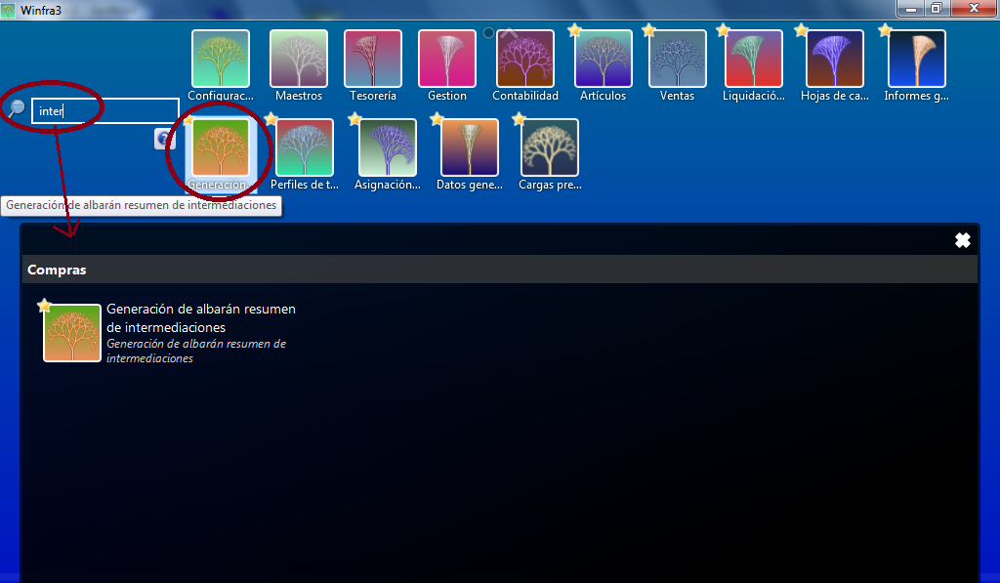
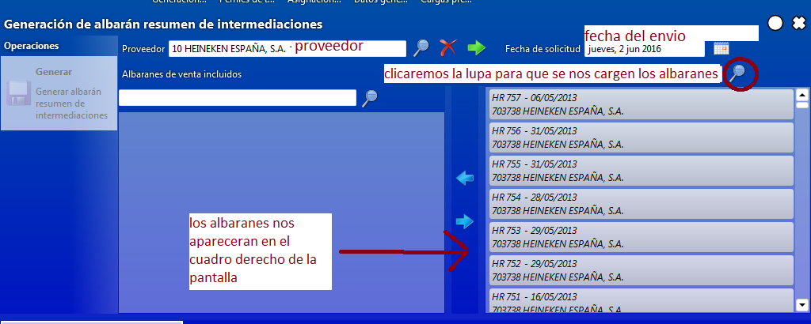
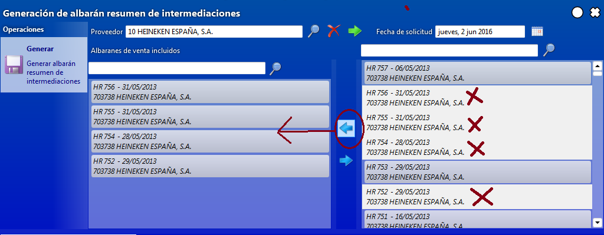
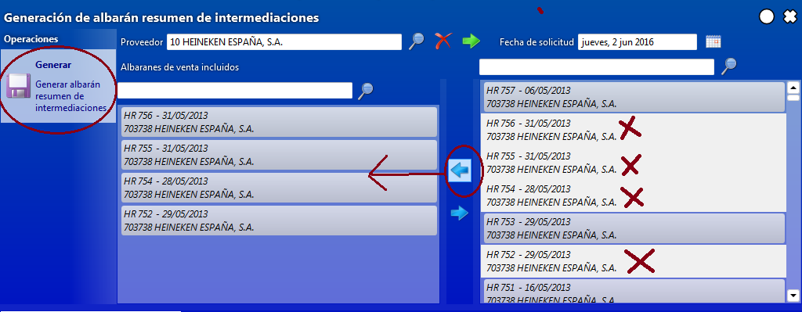
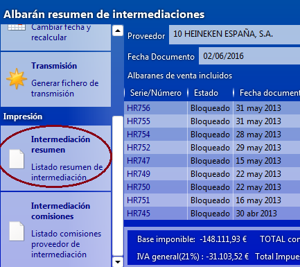
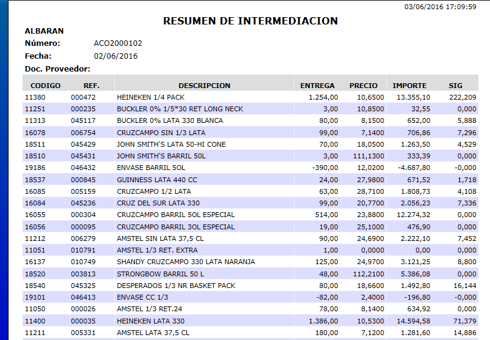
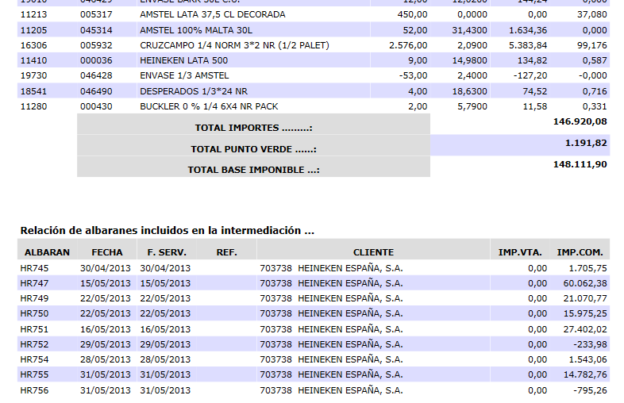
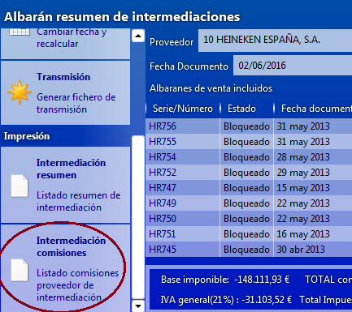

RESUMEN DE INTERMEDIACIÓN¶
Para acceder a las intermediaciones como es habitual tenemos dos posibilidades, hacerlo directamente desde el botón de Generación de albarán resumen de intermediaciones o simplemente pondremos la palabra o parte de ella en el buscador general, lo cual nos abre un cuadro donde está el botón de la generación de albarán resumen de intermediaciones:

Una vez cliquemos se nos abre una pantalla donde deberemos de introducir el proveedor (si desconocemos el nombre completo lo buscaremos como siempre poniendo parte del nombre y dando a la lupa, lo que nos abre un cuadro que nos mostrara todos los proveedores que contengan esa palabra y simplemente seleccionaremos el que nos interese); la fecha, que debe de ser la fecha en que vamos a transmitir, y luego le daremos a la lupa de la derecha para que nos muestre los albaranes de intermediación de ese proveedor:

Después simplemente seleccionaremos los albaranes que nos interesan y con la flecha de al lado en dirección a la izquierda los pasaremos a la ventana de la izquierda, si nos equivocáramos en alguno sencillamente lo haríamos al contrario, lo seleccionaríamos dentro de la ventana de la izquierda y con la flecha de hacia la derecha lo volveríamos a colocar en la ventana de la derecha:

Si nos fijamos los albaranes aunque los hemos pasado a la ventana de la izquierda nos siguen apareciendo en la derecha pero se nos ha quitado de ellos el sombreado azul y pasan a ser con fondo blanco, mientras no generemos el albarán continuaran apareciendo también en la ventana derecha.
Una vez seleccionados todos los que queramos, clicaremos sobre el botón de Generar albarán de resumen de intermediación:

Después de generar nos llevara a una pantalla donde veremos toda la relación de albaranes que voy a transmitir, desde aquí lo que hare será imprimirme ese listado primeramente desde el botón de Intermediación resumen que me mostrara por artículos las cantidades servidas de estos, junto con el precio y el total de la factura que me va a abonar el proveedor sin IVA, al final también veremos una relación de todos los documentos que hemos incorporado:



Después me imprimiré también un listado con las comisiones de reparto que el Proveedor me tiene que abonar por dichos servicios, clicando en el botón de Intermediación Comisiones:
